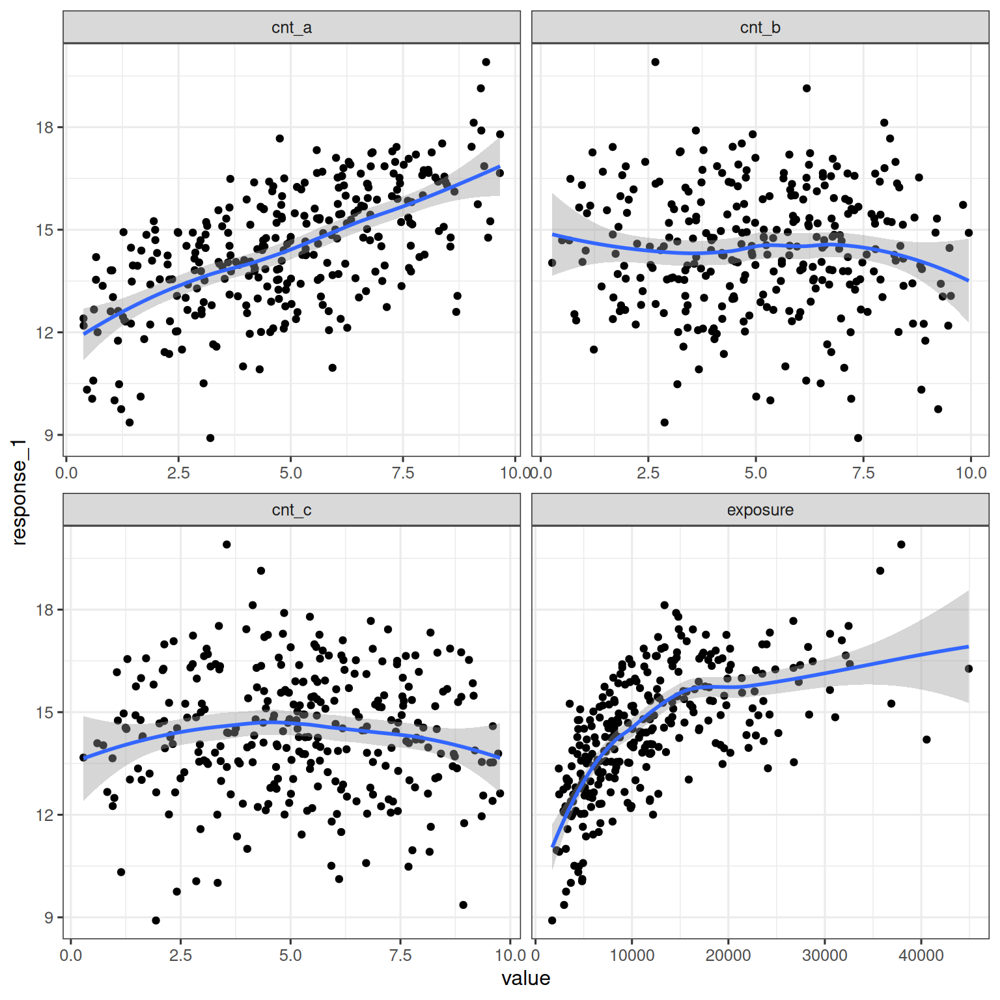

Show the code
library(tidyverse)
library(brms)
library(posterior)
library(tidybayes)
library(here)
theme_set(theme_bw(base_size = 12))The previous chapter introduced the brms approach to Bayesian Emax modeling, with examples provided for hyperbolic and sigmoidal Emax models, and considering both continuous and binary outcomes. This chapter extends this by building models that include covariates, and shows examples of model comparison using leave-one-out cross-validation (LOO-CV).
library(tidyverse)
library(brms)
library(posterior)
library(tidybayes)
library(here)
theme_set(theme_bw(base_size = 12))if (require(cmdstanr)) {
# prefer cmdstanr and cache binaries
options(
brms.backend = "cmdstanr",
cmdstanr_write_stan_file_dir = here("_brms-cache")
)
dir.create(here("_brms-cache"), FALSE)
} else {
rstan::rstan_options(auto_write = TRUE)
}Loading required package: cmdstanr
This is cmdstanr version 0.9.0
- CmdStanR documentation and vignettes: mc-stan.org/cmdstanr
- CmdStan path: /home/danielle/.cmdstan/cmdstan-2.36.0
- CmdStan version: 2.36.0
The simulated data set contains three continuous covariates (cov_a, cov_b, and cov_c) that may be related to response. The univariate relationships between each covariate and the response are shown below, along with the relationship between exposure and reponse:
d_example_emax_3cov <- read_csv(here("data", "d_example_emax_3cov.csv"))
d_example_emax_3cov |>
pivot_longer(
cols = c(exposure, cov_a, cov_b, cov_c),
names_to = "variable",
values_to = "value"
) |>
ggplot(aes(value, response)) +
geom_point() +
geom_smooth(formula = y ~ x, method = "loess") +
facet_wrap(~ variable, scales = "free_x")
In the brms framework, the Emax function is treated as a structural model and covariates can be placed on any parameter when the model is specified using brmsformula(). As an example, the model specified here sets cov_a, cov_b, and cov_c as covariates on the baseline response:
covariate_model <- brmsformula(
response ~ e0 + emax * exposure / (ec50 + exposure), # structural model
e0 ~ 1 + cov_a + cov_b + cov_c, # covariate model for baseline
emax ~ 1, # covariate model for max response
ec50 ~ 1, # covariate model for EC50
nl = TRUE
)The measurement model and parameter prior are specified using brmsfamily() and prior(), and are the same as for the model without covariates:
gaussian_measurement <- brmsfamily(
family = "gaussian",
link = "identity"
)
parameter_prior <- c(
prior(normal(0, 1.5), nlpar = "e0"),
prior(normal(0, 1.5), nlpar = "emax"),
prior(normal(2000, 500), nlpar = "ec50", lb = 0)
)When interpreting the prior, it is important to remember that there are covariates on e0: the normal(0, 1.5) prior is applied to all regression coefficients. That means that this prior is applied independently to e0_Intercept, e0_cov_a, e0_cov_b, and e0_cov_c.
To apply this model to the continuous data, pass all three of these to brm():
continuous_covariate_fit <- brm(
formula = covariate_model,
family = gaussian_measurement,
data = d_example_emax_3cov,
prior = parameter_prior
) Printing the continuous_covariate_fit object provides summary information about the regression coefficients for the covariates and other parameters:
continuous_covariate_fit Family: gaussian
Links: mu = identity; sigma = identity
Formula: response ~ e0 + emax * exposure/(ec50 + exposure)
e0 ~ 1 + cov_a + cov_b + cov_c
emax ~ 1
ec50 ~ 1
Data: d_example_emax_3cov (Number of observations: 300)
Draws: 4 chains, each with iter = 2000; warmup = 1000; thin = 1;
total post-warmup draws = 4000
Regression Coefficients:
Estimate Est.Error l-95% CI u-95% CI Rhat Bulk_ESS Tail_ESS
e0_Intercept 3.92 0.48 2.93 4.82 1.00 1587 2164
e0_cov_a 0.52 0.01 0.49 0.54 1.00 3078 2500
e0_cov_b 0.01 0.01 -0.01 0.04 1.00 3046 2655
e0_cov_c -0.00 0.01 -0.03 0.02 1.00 3392 2810
emax_Intercept 10.67 0.43 9.85 11.53 1.00 1687 2375
ec50_Intercept 3151.95 282.74 2627.99 3719.94 1.00 1700 2237
Further Distributional Parameters:
Estimate Est.Error l-95% CI u-95% CI Rhat Bulk_ESS Tail_ESS
sigma 0.52 0.02 0.48 0.57 1.00 3309 2507
Draws were sampled using sample(hmc). For each parameter, Bulk_ESS
and Tail_ESS are effective sample size measures, and Rhat is the potential
scale reduction factor on split chains (at convergence, Rhat = 1).
Extending the data visualization used earlier, the model predictions can be plotted as a function of both exposure and cov_a:
cov_a_map <-
tibble(
cov_a = c(2, 5, 8),
cov_a_group = c("2 (<3.5)", "5 (3.5~6.5)", "8 (≥6.5)")
)
sim_exposure_cov_a <-
continuous_covariate_fit |>
epred_draws(newdata = expand_grid(
exposure = seq(0, 50000, 1000),
cov_a = c(2, 5, 8),
cov_b = 5,
cov_c = 5
)) |>
median_qi() |>
left_join(cov_a_map, by = join_by(cov_a))
d_for_plot <-
d_example_emax_3cov |>
mutate(
cov_a_raw = cov_a,
cov_a = case_when(
cov_a < 3.5 ~ 2,
cov_a >= 3.5 & cov_a < 6.5 ~ 5,
cov_a >= 6.5 ~ 8
)
) |>
left_join(cov_a_map, by = join_by(cov_a))
sim_exposure_cov_a |>
ggplot(mapping = aes(exposure, .epred)) +
geom_path() +
geom_ribbon(
mapping = aes(ymin = .lower, ymax = .upper),
alpha = 0.3
) +
geom_point(
data = d_for_plot,
mapping = aes(y = response, color = cov_a_raw)
) +
facet_wrap(~cov_a_group, labeller = label_both) +
labs(color = "cov_a") +
theme(legend.position = "bottom")
Building a covariate model for binary response data follows the same process as for continuous response data. As before, exploratory visualizations are helpful in illustrating the relationships between covariates and the response:
d_example_emax_bin_3cov <- read_csv(here("data", "d_example_emax_bin_3cov.csv"))
d_example_emax_bin_3cov |>
pivot_longer(
cols = c(exposure, cov_a, cov_b, cov_c),
names_to = "variable",
values_to = "value"
) |>
mutate(response = factor(response)) |>
ggplot(aes(response, value)) +
geom_violin(draw_quantiles = .5) +
facet_wrap(~ variable, scales = "free_y")
As in the previous chapter, the only difference between the binary model and the continuous model is the use of the bernoulli_measurement model:
bernoulli_measurement <- brmsfamily(
family = "bernoulli",
link = "logit"
)The parameter_prior and covariate_model are the same as before. All three are passed to brm(), as shown below:
binary_covariate_fit <- brm(
formula = covariate_model,
family = bernoulli_measurement,
data = d_example_emax_bin_3cov,
prior = parameter_prior
) After the sampling finishes, printing the model fit object shows parameter estimates and details about the behavior of the sampler:
binary_covariate_fit Family: bernoulli
Links: mu = logit
Formula: response ~ e0 + emax * exposure/(ec50 + exposure)
e0 ~ 1 + cov_a + cov_b + cov_c
emax ~ 1
ec50 ~ 1
Data: d_example_emax_bin_3cov (Number of observations: 300)
Draws: 4 chains, each with iter = 2000; warmup = 1000; thin = 1;
total post-warmup draws = 4000
Regression Coefficients:
Estimate Est.Error l-95% CI u-95% CI Rhat Bulk_ESS Tail_ESS
e0_Intercept -2.06 0.86 -3.80 -0.41 1.00 2047 2076
e0_cov_a 0.22 0.07 0.09 0.35 1.00 3228 2670
e0_cov_b -0.02 0.06 -0.15 0.10 1.00 4227 2524
e0_cov_c -0.03 0.06 -0.15 0.09 1.00 3337 2706
emax_Intercept 3.40 0.90 1.62 5.17 1.00 2869 2803
ec50_Intercept 2451.78 452.04 1580.53 3333.24 1.00 3934 2231
Draws were sampled using sample(hmc). For each parameter, Bulk_ESS
and Tail_ESS are effective sample size measures, and Rhat is the potential
scale reduction factor on split chains (at convergence, Rhat = 1).
The data visualization for this model is shown below:
cov_a_map <-
tibble(
cov_a = c(2, 5, 8),
cov_a_group = c("2 (<3.5)", "5 (3.5~6.5)", "8 (≥6.5)")
)
sim_exposure_cov_a <-
binary_covariate_fit |>
epred_draws(newdata = expand_grid(
exposure = seq(0, 50000, 1000),
cov_a = c(2, 5, 8),
cov_b = 5,
cov_c = 5
)) |>
median_qi() |>
left_join(cov_a_map, by = join_by(cov_a))
d_for_plot <-
d_example_emax_bin_3cov |>
mutate(
cov_a_raw = cov_a,
cov_a = case_when(
cov_a < 3.5 ~ 2,
cov_a >= 3.5 & cov_a < 6.5 ~ 5,
cov_a >= 6.5 ~ 8
)
) |>
left_join(cov_a_map, by = join_by(cov_a))
sim_exposure_cov_a |>
ggplot(mapping = aes(exposure, .epred)) +
geom_path() +
geom_ribbon(
mapping = aes(ymin = .lower, ymax = .upper),
alpha = 0.3
) +
geom_jitter(
data = d_for_plot,
mapping = aes(y = response, color = cov_a_raw),
width = 0,
height = .05
) +
facet_wrap(~cov_a_group, labeller = label_both) +
labs(color = "cov_a") +
theme(legend.position = "bottom")
The previous two examples illustrate covariates placed on the intercept parameter e0. It is possible to define covariate models on any parameter within the Emax model.
other_covariates <- brmsformula(
response ~ e0 + emax * exposure / (ec50 + exposure), # structural model
e0 ~ 1 + cov_a, # covariate model for baseline
emax ~ 1 + cov_b, # covariate model for max response
ec50 ~ 1, # covariate model for EC50
nl = TRUE
)other_covariates_fit <- brm(
formula = other_covariates,
family = gaussian_measurement,
data = d_example_emax_3cov,
prior = parameter_prior
) Printing the other_covariates_fit object provides summary information:
other_covariates_fit Family: gaussian
Links: mu = identity; sigma = identity
Formula: response ~ e0 + emax * exposure/(ec50 + exposure)
e0 ~ 1 + cov_a
emax ~ 1 + cov_b
ec50 ~ 1
Data: d_example_emax_3cov (Number of observations: 300)
Draws: 4 chains, each with iter = 2000; warmup = 1000; thin = 1;
total post-warmup draws = 4000
Regression Coefficients:
Estimate Est.Error l-95% CI u-95% CI Rhat Bulk_ESS Tail_ESS
e0_Intercept 3.97 0.50 2.98 4.90 1.00 1145 1572
e0_cov_a 0.52 0.01 0.49 0.54 1.00 2584 2219
emax_Intercept 10.55 0.47 9.65 11.49 1.00 1222 1569
emax_cov_b 0.03 0.02 -0.01 0.06 1.00 2951 2598
ec50_Intercept 3147.49 294.61 2608.48 3770.72 1.00 1222 1734
Further Distributional Parameters:
Estimate Est.Error l-95% CI u-95% CI Rhat Bulk_ESS Tail_ESS
sigma 0.52 0.02 0.48 0.57 1.00 2581 2106
Draws were sampled using sample(hmc). For each parameter, Bulk_ESS
and Tail_ESS are effective sample size measures, and Rhat is the potential
scale reduction factor on split chains (at convergence, Rhat = 1).
The brms package provides a flexible interface for model comparison using LOO-CV and WAIC, using the loo package internally. One workflow for calling this interface is illustrated in this section, using the three possible Emax models as examples:
# no covariates
base_model <- brmsformula(
response ~ e0 + emax * exposure / (ec50 + exposure),
e0 ~ 1,
emax ~ 1,
ec50 ~ 1,
nl = TRUE
)
# one predictor on e0
cov_a_model <- brmsformula(
response ~ e0 + emax * exposure / (ec50 + exposure),
e0 ~ 1 + cov_a,
emax ~ 1,
ec50 ~ 1,
nl = TRUE
)
# three predictors on e0
cov_abc_model <- brmsformula(
response ~ e0 + emax * exposure / (ec50 + exposure),
e0 ~ 1 + cov_a + cov_b + cov_c,
emax ~ 1,
ec50 ~ 1,
nl = TRUE
)In addition to calling brm() to estimate regression coefficients, the add_criterion() function is called to run the LOO-CV procedure and store the results internally within the brmsfit object:
base_fit <- base_model |>
brm(
family = gaussian_measurement,
data = d_example_emax_3cov,
prior = parameter_prior
) |>
add_criterion("loo")
cov_a_fit <- cov_a_model |>
brm(
family = gaussian_measurement,
data = d_example_emax_3cov,
prior = parameter_prior
) |>
add_criterion("loo")
cov_abc_fit <- cov_abc_model |>
brm(
family = gaussian_measurement,
data = d_example_emax_3cov,
prior = parameter_prior
) |>
add_criterion("loo")To compare models that have LOO criteria information added, use loo_compare():
model_comparison <- loo_compare(
base_fit,
cov_a_fit,
cov_abc_fit
)
model_comparison elpd_diff se_diff
cov_a_fit 0.0 0.0
cov_abc_fit -1.6 1.1
base_fit -269.5 14.5
In this example, cov_a_fit model outperforms the other two models.
By default the printed output shows the most important columns, but the return value from loo_compare() contains additional information relevant to the model comparison. To view all columns, call the print method with simplify = FALSE:
print(model_comparison, simplify = FALSE) elpd_diff se_diff elpd_loo se_elpd_loo p_loo se_p_loo looic
cov_a_fit 0.0 0.0 -233.1 12.5 4.1 0.5 466.1
cov_abc_fit -1.6 1.1 -234.7 12.5 6.1 0.6 469.4
base_fit -269.5 14.5 -502.6 10.7 2.7 0.2 1005.1
se_looic
cov_a_fit 24.9
cov_abc_fit 25.0
base_fit 21.4